System Design Mastery
Master scalable systems with premium insights
🔗 Design URL Shortener — System Design Deep Dive
📚 Quick Navigation
🌐 What is URL Shortener
A URL Shortener is a service that takes a long URL and converts it into a shorter, more manageable link that redirects to the original URL when accessed.
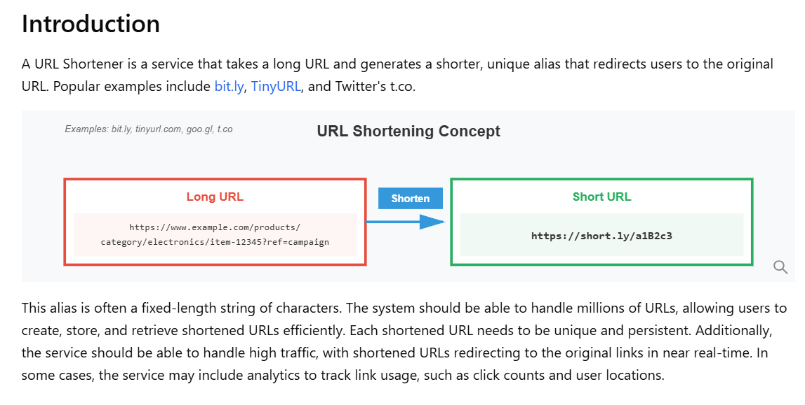
📺 Checkout this YouTube video:
📋 Requirements
✅ 1. Functional Requirements (What system should do)
1. URL Shortening
Convert a long URL into a short, unique URL.
- 👉 Input: Long URL
- 👉 Output: Short URL
2. URL Redirection
When user clicks the short URL, redirect to the original long URL.
👉 Core feature (most traffic comes here)
3. Link Analytics
Link analytics is the process of tracking and analyzing how many times a short URL is accessed and related usage details.
👉 It tracks:
- Number of clicks by user
- When the link was clicked (Time)
- From which location 🌍
- From which device (mobile/laptop) 📱💻
💡 Used Mainly for:
- Monitoring popularity
- Improving caching (hot URLs)
4. Link Expiration
The system should support link expiration, where a short URL becomes invalid after a specified time, and expired links are periodically cleaned up using background jobs.
⚡ Non-Functional Requirements (How system should behave)
1. Low Latency ⚡
Redirection must be very fast.
URL redirection should be low
latency,
ideally completing within a few milliseconds so that the user is instantly redirected to
the original long URL without noticeable delay.
👉 Target: < 100ms–300ms (ideal) (not 3 sec — that's too slow)
2. High Availability 🟢
System should be available almost always (99.9%+).
Even if some
servers
fail, redirects must work.
💡 Because: Users clicking links expect instant response
3. Scalability 📈
- Should handle millions to billions of URLs
- Read-heavy system (more redirects than writes)
💡 You can say: "System should scale horizontally using load balancers and distributed storage."
4. Durability 💾
Once a short URL is created, it should not be lost. Data must be safely stored.
5. Consistency vs Availability (CAP Thinking)
Prefer Availability over strict Consistency
💡 Example: It's okay if analytics is slightly delayed, but redirects must always work
6. Security
- Prevent malicious URLs
- Rate limiting (avoid abuse/spam)
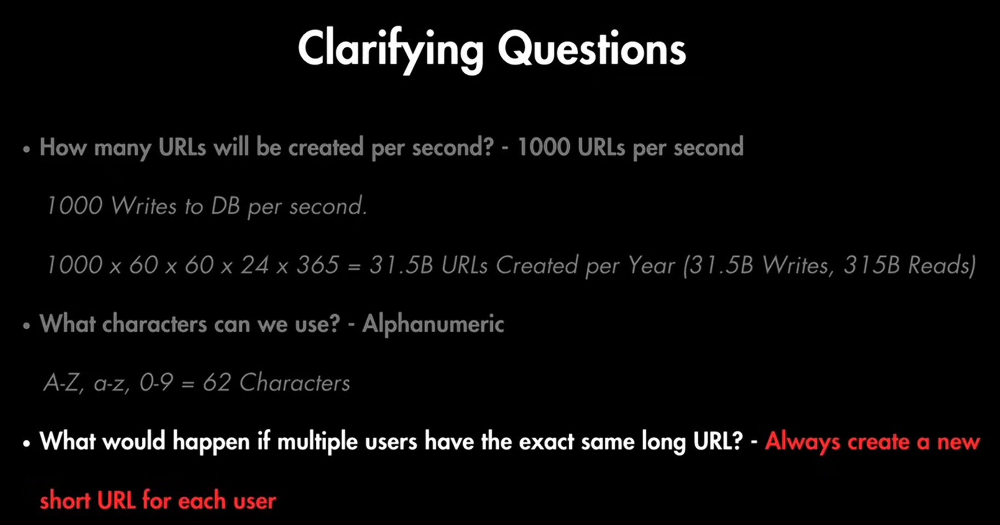
📊 2. Data Estimation
1. Traffic Assumption
"Let's assume the system generates 1000 URLs per second."
Writes = 1000/sec → creating short URLs
Assuming 10x more reads than writes
👉 So: Reads = 10,000/sec, Writes = 1,000/sec
What is Read vs Write?
Write (Create URL)
- 👉 When user submits a long URL and system stores it
- 👉 Example: creating short.ly/abc123
Read (Redirect URL)
- 👉 When user clicks short URL and gets redirected
- 👉 This is the most frequent operation
💡 Interview line: "Reads are significantly higher because each short URL can be accessed multiple times after creation."
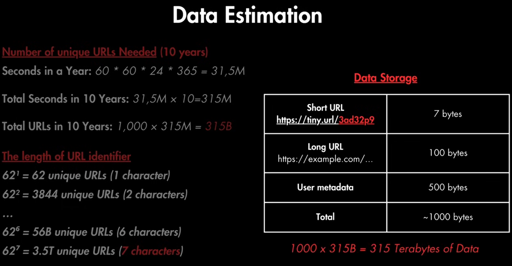
We use Base62 Encoding
- [a–z] = 26 characters
- [A–Z] = 26 characters
- [0–9] = 10 digits
Total = 62 characters
👉 So each position in short URL has 62 possibilities
1. Yearly Estimation
Seconds in a year ≈ 60×60×24×365 = 31.5 million
URLs per year:
👉 1000 × 31.5M = 31.5 Billion URLs in year
Reads per year:
👉 10,000 × 31.5M = 315 Billion reads in year
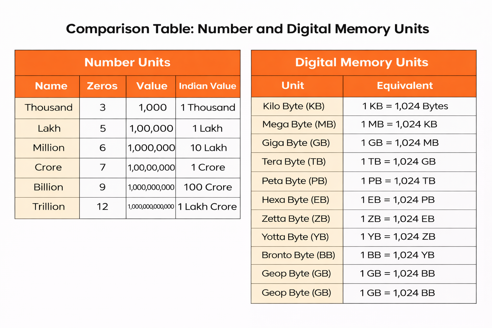
2. Capacity of Short URLs
If length = 7 characters:
62^7 ≈ 3.5 Trillion unique URLs
👉 This is enough for:
315 Billion URLs (your 10-year estimate)
💡 Interview line: "Using Base62 with 7 characters gives ~3.5 trillion combinations, which comfortably supports our scale."
3. Storage Per URL
- Short URL → ~7 bytes
- Long URL → ~100 bytes
- Metadata → ~500 bytes
👉 Total storage per request ≈ ~1000 bytes (≈ 1 KB)
4. Total Storage Calculation
We already calculated: Total URLs in 10 years for reads = 315 Billion
Now:
315 Billion × 1 KB
= 315 Billion KB
👉 Total Storage for reads ≈ 315 Terabytes
Bandwidth
Since we expect about 1000 URLs every second, and if we assume each request is of size 1000 bytes then the total incoming data for write requests would be:
1000×1000 bytes = 1MB/second for each write request
Similarly, for the read requests, since we expect about 10K redirections, the total outgoing data would be:
10000 URLs/second × 1000 bytes = ~10 MB/second for each read request
💡 Remember: Caching Strategy
For caching, we will follow the classic Pareto principle also known as the 80/20 rule. This means that 80% of the requests are for 20% of the data, so we can cache around 20% of our requests.
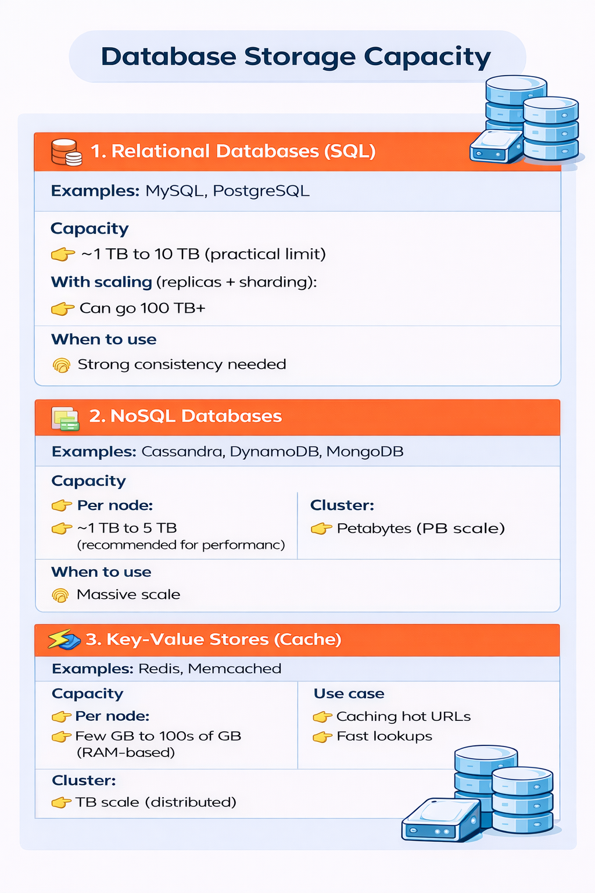
⚖️ CAP Theorem
Q1. Do we prefer Consistency or Availability?
👉 Choose: Availability (AP system)
- Redirect should always work (even if slightly stale data)
Use BASE principles:
- Basically Available
- Soft State
- Eventual Consistency
Q2. Is this system global?
Yes → Need CDN + geo-distributed servers
🏗️ 3. Needed Components
1. Client
User (browser/mobile app) sends request to create or access short URL
2. API Gateway
Entry point to the system
- Handles authentication
- Routes requests to services
- Applies rate limiting
3. Load Balancer
Distributes traffic across multiple servers
- Ensures high availability
- Prevents overload
4. Core Services (3 Services)
1. URL Shortening Service
Converts long URL → short URL
- Generates unique ID
- Stores in database
2. URL Redirection Service
Redirects short URL → long URL
- Most frequent (read-heavy)
- Uses cache for fast response
3. Link Analytics Service
Tracks number of clicks and usage data
- Stores metrics for analysis
5. Cache (Redis) ⚡
uses LRU (Least Recently Used) + TTL (Time to Live)
- Stores frequently accessed URLs
- Reduces database load
- Improves latency
6. Database 💾
Stores mapping (short URL → long URL)
Use NoSQL for large scale
Why NoSQL?
We use NoSQL because the data is simple key-value (short URL → long URL), and the system needs to handle very large scale and high traffic. NoSQL makes it easy to scale horizontally and handle millions of requests with No joins, no complex relations.
NoSQL databases support built-in partitioning
When NOT to use NoSQL?
👉 If system needs:
- Strong consistency than Availability
- Complex joins
- Transactions (ACID)
Uses Client - Server Architecture
7. Read Replicas 🟢
- Handle heavy read traffic
- Improve performance
8. Sharding 🧩 (Key based Sharding)
- Split data across multiple databases
- Handles large-scale data
9. Rate Limiting 🚫
- Prevents abuse (too many requests)
- Applied at API Gateway
📊 4. Data Model
The URL Shortening Service owns URLMapping to ensure
unique ID generation.
The Analytics Service owns
Analytics
to handle high-volume write traffic without impacting redirection performance.
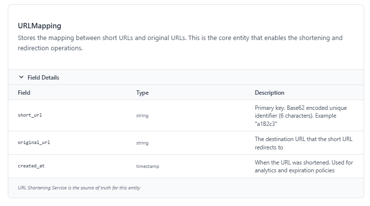
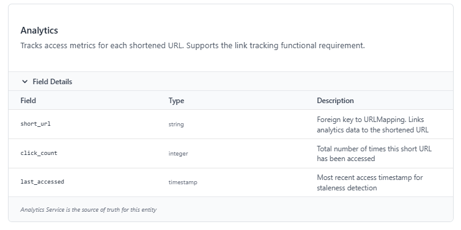
Relationship
URLMapping and Analytics have a one-to-one relationship. Each shortened URL has exactly one analytics record. The relationship is optional - URLs can exist without analytics if tracking is disabled.
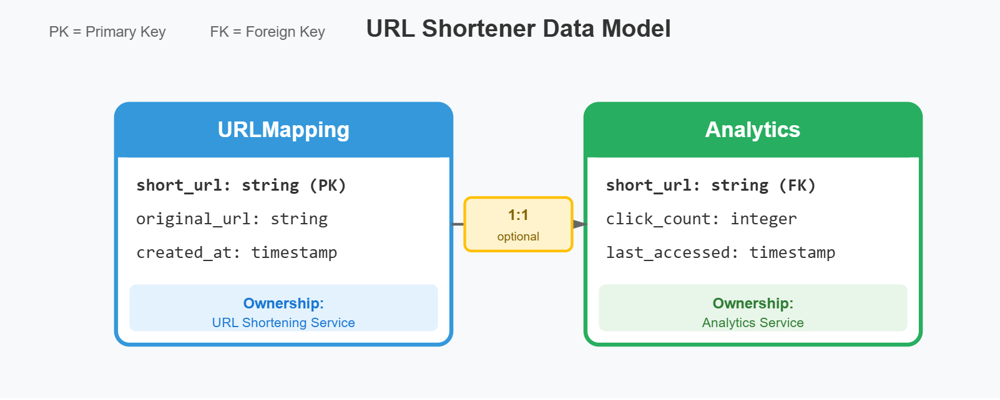
🌐 5. Design API Endpoints
POST /api/urls/shorten
Shorten a given long URL and return the shortened URL.
Request Body
{
"longUrl": "http://example.com"
}
Response Body
{
"shortUrl": "http://urlshort.ly/abcd"
}
GET /api/urls/{shortUrl}
Redirect to the original long URL using the shortened URL.
Response Body
{
"longUrl": "http://example.com"
}
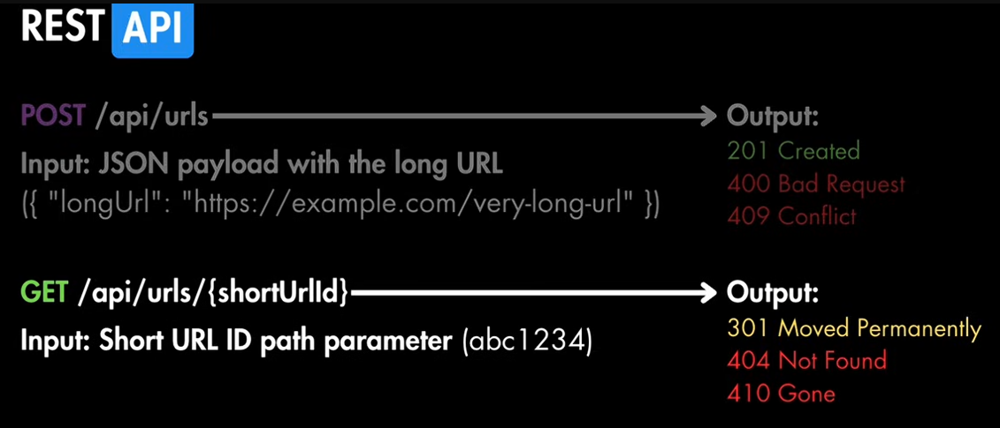
🏗️ 6. High Level Design
1. URL Shortening
Users should be able to input a long URL and receive a unique, shortened alias. The shortened URL should use a compact format with English letters and digits to save space and ensure uniqueness.
The design for URL shortening follows a basic two-tier architecture that processes requests quickly and scales to handle high volumes:
1. Client
The frontend application sends HTTP POST requests containing long URLs to the URL Shortening service.
2. URL Shortening Service
The backend receives requests and is responsible for creating and returning shortened URLs. It performs these key functions:
- Generates a unique, short alias by encoding the URL or using hashing techniques to ensure uniqueness.
- Stores the mapping of long URLs to short aliases in the database.
- Manages errors and ensures each short URL is unique across all users.
3. Database
A highly available database (e.g., DynamoDB or Cassandra) is used to persist mappings between long URLs and short aliases.
This design supports efficient and quick URL shortening with minimal data storage requirements per URL entry.
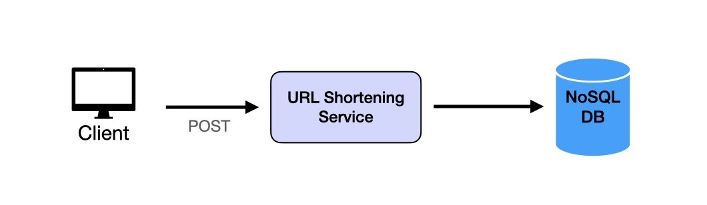
2. URL Redirection
When users access a shortened URL, the service should redirect them seamlessly to the
original URL with minimal delay.
The URL redirection service ensures that users accessing a
shortened URL are quickly redirected to the original URL with minimal
delay. This design focuses on high read throughput and low latency, as the
read traffic will be significantly higher than URL creation.
1. API Gateway
As we now have two request types, we need an API Gateway. This acts as the entry point for all incoming requests, routing POST requests to the URL Shortening Service and GET requests to the URL Redirection Handler.
2. URL Redirection Request Handler
Accepts GET requests with the shortened URL, queries the cache for the original URL, and responds with a 302 Found status and the original URL in the Location header to facilitate seamless redirection.
- 301 → browser caches redirect (Acts like cache, no request next time)
- 302 → not cached (Every request hits server, good for analytics)
3. Caching Layer
To reduce latency and offload read requests from the database, we implement a read-through caching layer (e.g., Redis with cache libraries) that stores frequently accessed URL mappings in memory. When a URL is not found in the cache, the cache itself automatically retrieves it from the database and stores it for future requests, making the process transparent to the Request Handler.
4. Database
The database stores all URL mappings. The cache layer automatically queries the database when needed, without requiring the Request Handler to manage cache misses directly.
Indexing
We use indexing on:
1. short_code
short_code → long_url
- 👉 Used during redirection (read-heavy)
- 👉 Should be PRIMARY KEY / INDEXED
This setup ensures efficient and reliable URL redirection at scale by combining the API Gateway, Request Handler, Caching Layer, and Database.
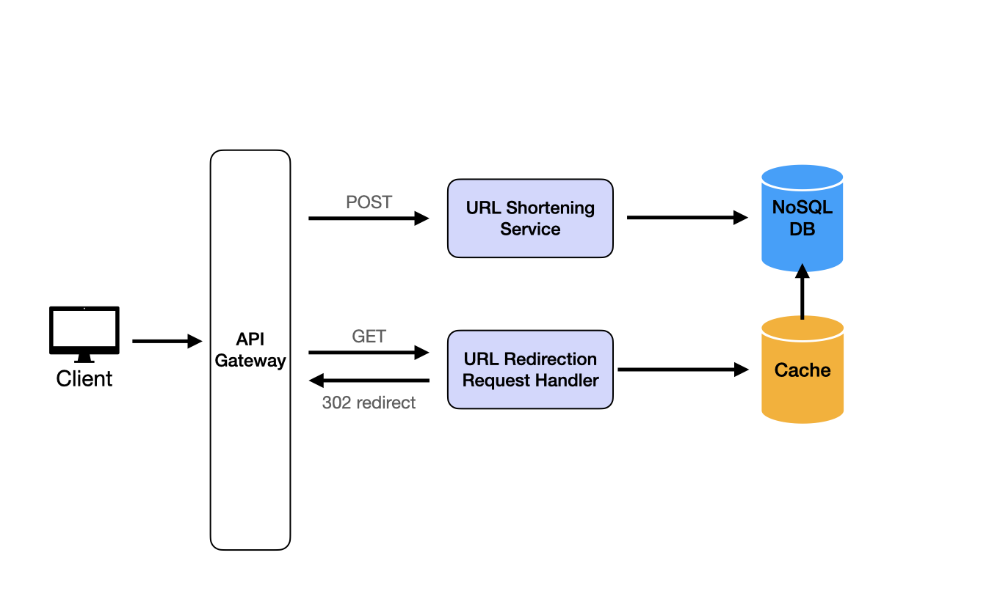
3. Link Analytics
The system should be able to track the number of times each shortened URL is accessed to
provide insights into link usage.
To track the number of accesses for each shortened
URL, we
introduce an Analytics Service that counts and stores access events in real
time. This setup provides useful insights into link usage patterns and is designed to scale
for high traffic.
1. API Gateway
Routes GET requests to both the URL Redirection Handler (for redirection) and the Analytics Service (for tracking access).
2. Analytics Service
Tracks each URL access by incrementing a counter associated with the short URL. This service logs access events and can be optimized by using a lightweight in-memory counter before periodically updating the database.
3. In-Memory Database
For high-speed access counting, we use an in-memory data store like Redis to cache the counters for each short URL. This enables real-time tracking and reduces the load on the main database.
4. Database
Periodically, the Analytics Service flushes the in-memory counters to the main database to ensure persistent storage of access counts.
This architecture enables efficient, real-time analytics collection, combining the speed of in-memory storage with the durability of a database.
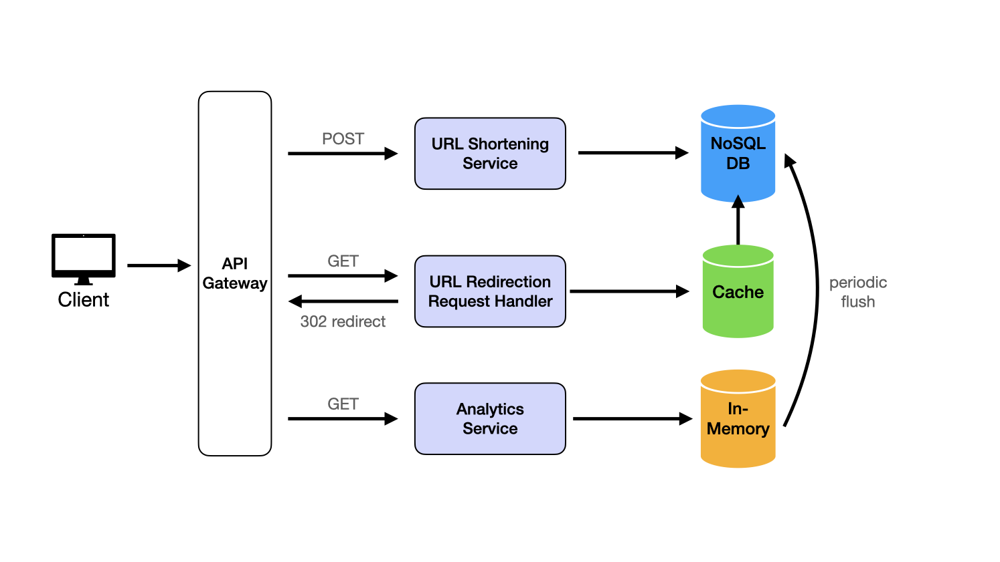
🔧 7. How to Create Short URL from Long URL
Step 1: Take Long URL
https://example.com/very/long/url
Step 2: Apply Hash Function
Use:
MD5 / SHA-256
👉 These convert any length input → fixed length output
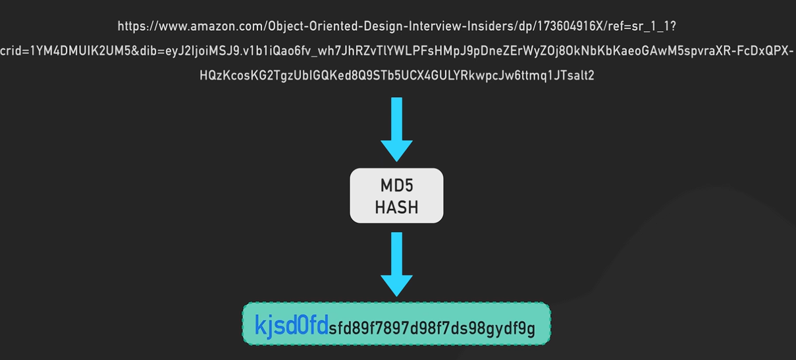
Step 3: Take First 7 Characters
🔴 Problem: Collision
Two different URLs may generate same first 7 characters
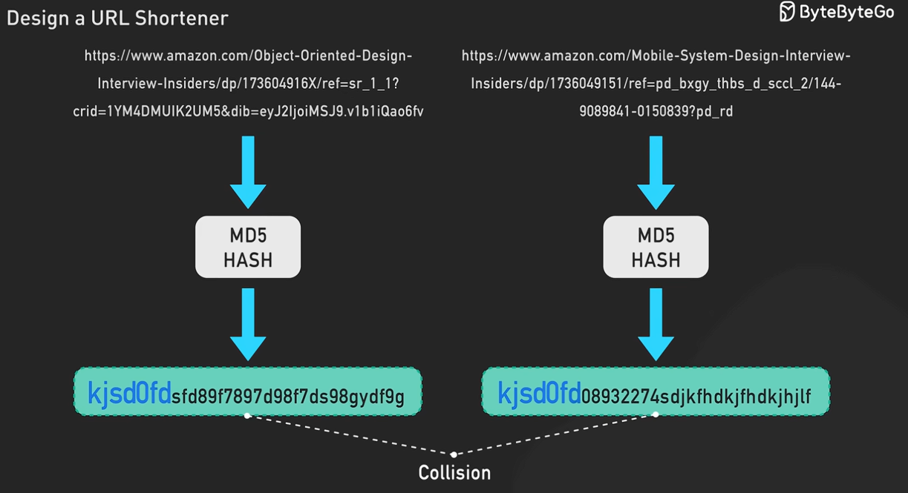
Solution: Add Predefined String (Salt)
👉 If collision happens:
new_input = longURL + "random_string"
Then hash again:
hash(new_input) → new short code
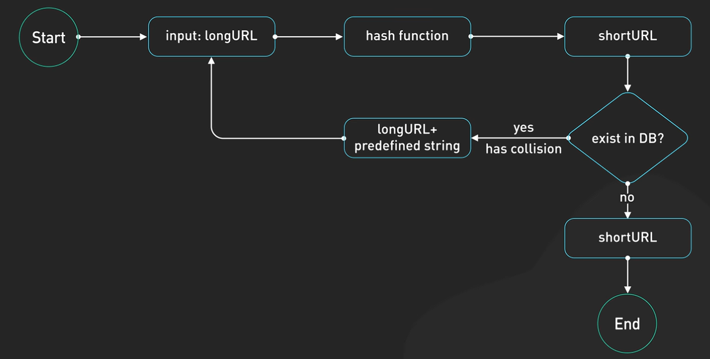
Flow:
- Take long URL
- Apply hash function
- Generate short URL
- Check: "Does this already exist in DB?"
If NO (no collision) → Store and return short URL ✅
If YES (collision) → Do this:
- new_longURL = longURL + predefined_string
- Hash again
- Generate new short code
- Check DB again
Repeat:
🔁 Loop until unique
⚠️ Failure Scenario
👉 Problem with predefined string:
If we always use same string like:
+ "123"
Example:
URL1 → hash → collision → URL1 + "123" → new_hash1
URL2 → hash → collision → URL2 + "123" → new_hash2
👉 Still possible:
new_hash1 and new_hash2 may again collide ❌
😬 Worse Case
If:
- Same predefined string used repeatedly
- High traffic system
👉 Multiple retries → performance issue
This is not best way
📺 Checkout best way here — watch this video:
📈 8. Scaling Considerations
1. Horizontal Scaling 📈
"A single server cannot handle this scale of traffic."
👉 So we distribute load across multiple servers
2. Read Replicas 🟢
"Since reads are very high, we use read replicas."
- Master DB → Handles writes
- Replica DBs → Handle reads
💡 Benefit:
- Improves performance
- Reduces load on primary DB
3. Caching ⚡ (here we use LRU+TTL cache)
"We use caching to reduce database hits for frequent URLs."
- Store popular (hot) URLs in cache (like Redis)
- Most redirects served from cache instead of DB
💡 Especially useful because:
"Same short URL is accessed multiple times."
4. Sharding (If Required) 🧩
"If a single database cannot handle the load, we use sharding."
- Split data across multiple DBs
- Use key-based sharding (based on short URL hash)
Example flow :
When user clicks : short.ly/kjsd0fd
- Extract key → kjsd0fd
- Compute shard : hash(kjsd0fd) % N
- Directly go to that shard
- Fetch long URL → redirect
💡 Interview line: "We can shard based on the short URL key to distribute data evenly."
Key points:
- If a shard fails, we use consistent hashing to redistribute data with minimal impact
- When a shard is full, we scale horizontally by adding new shards and rebalance data using consistent hashing
❤️ 9. Health Checks & Monitoring
❤️ Health Checks
🔹 Q: How do we monitor health?
"We use health checks to ensure all services and servers are working properly."
How:
Heartbeats ❤️
- 👉 Each service periodically sends a signal
- 👉 If missing → service is down
Health Endpoints (/health)
- 👉 Each service exposes an API
- 👉 Load balancer checks:
/health → OK / FAIL
💡 In URL Shortener: Check URL service, DB, cache availability
📊 Logging & Monitoring
🔹 Q: How do we track system behavior?
"We use logging and monitoring to track requests, errors, and performance."
Logs 📜
Store:
- API requests
- Errors
- Redirect failures
👉 Tools:
ELK (Elasticsearch, Logstash, Kibana)
Metrics 📈
Track:
- Requests per second
- Latency
- Error rate
- Cache hit/miss
👉 Tools:
Grafana + Prometheus
💡 In URL Shortener: "We monitor redirect latency and cache hit ratio since reads are critical."
🔐 10. Security
🔐 Security
🔹 Q: How to secure system?
"We secure the system to prevent abuse and protect users."
1. Rate Limiting 🚫
- 👉 Prevent spam URL creation
- 👉 Example: limit requests per IP
2. HTTPS 🔒
- 👉 Encrypt communication
- 👉 Prevent data leaks
3. Input Validation
👉 Prevent invalid or dangerous URLs
💰 How URL Shorteners Make Money
Let's take Bitly as example
🧾 1. SaaS (Primary Revenue)
Businesses pay for:
- Custom links (brand.ly/...)
- Analytics (click tracking, location, device)
- Campaign tracking
👉 This is the main revenue
📊 2. Analytics Platform
Sell:
- User behavior data
- Marketing insights
👉 Very valuable for companies
📢 3. Ads / Interstitial Pages
Some shorteners show:
- Ads before redirect
👉 Earn per click
🔗 4. Enterprise API Access
Companies pay for:
- Bulk link generation
- Integration APIs
⚠️ But Real Cost of companies is NOT just Storage
👉 Biggest costs are:
- Compute (servers handling redirects)
- Read-heavy traffic (millions of clicks)
- CDN usage
- Database scaling
- Replication (×2 or ×3)
- Backups
- Indexing DB
📚 References
Checkout these resources for detailed approach explaining different approaches: